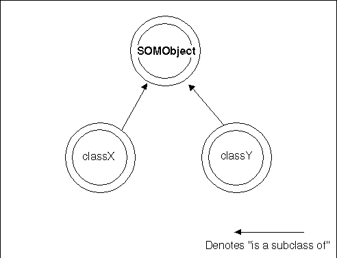

The following example shows the use of name-lookup by a SOM client programmer. Name-lookup resolution is appropriate when a programmer knows that an object will respond to a method of some given name, but does not know enough about the type of the object to use offset method resolution. How can this happen? It normally happens when a programmer wants to write generic code, using methods of the same name and signature that are applicable to different classes of objects, and yet these classes have no common ancestor that introduces the method. This can easily occur in single-inheritance systems (such as Smalltalk and SOM release 1) and can also happen in multiple-inheritance systems such as SOM release 2-when class hierarchies designed by different people are brought together for clients' use.
If multiple inheritance is available, it is always possible to create a common class ancestor into which methods of this kind can be migrated. A refactoring of this kind often implements a semantically pleasing generalization that unifies common features of two previously unrelated class hierarchies. This step is most practical, however, when it does not require the redefinition or recompilation of current applications that use offset resolution. SOM is unique in that it allows this.
However, such refactoring must redefine the classes that originally introduced the common methods (so the methods can be inherited from the new "unifying" class instead). A client programmer who simply wants to create an application may not control the implementations of the classes. Thus, the use of name-lookup method resolution seems the best alternative for programmers who do not want to define new classes, but simply to make use of available ones.
For example, assume the existence of two different SOM classes, "classX" and "classY", whose only common ancestor is SOMObject, and who both introduce a method named "reduce" that accepts a string as an argument and returns a long. We assume that the classes were not designed in conjunction with each other. As a result, it is unlikely that the "reduce" method was defined with a namelookup modifier. The following figure illustrates the class hierarchy for this example.
Following is a C++ generic procedure that uses name-lookup method resolution to invoke the "reduce" method on its argument, which may be either of type "classX" or "classY". Note that there is no reason to include classY's usage bindings, since the typedef provided for the "reduce" method procedure in "classX" is sufficient for invoking the method procedure, independently of whether the target object is of type "classX" or "classY".
#include <classX.xh> // use classX's method proc typedef
// this procedure can be invoked on a target of type
// classX or classY.
long generic_reduce1(SOMObject *target, string arg)
{
somTD_classX_reduce reduceProc = (somTD_classX_reduce)
somResolveByName(target, "reduce");
return reduceProc(target, arg);
}
On the other hand, If the classes were designed in conjunction with each other, and the class designer felt that programmers might want to write generic code appropriate to either class of object, the namelookup modifier might have been used. This is a possibility in SOM release 2, even with multiple inheritance, but it is much more likely that the class designer would use multiple inheritance to introduce the reduce method in a separate class, and then use this other class as a parent for both classX and classY (thereby allowing the use of offset resolution).
In any case, if the "reduce" method in "classX" were defined as a namelookup method, the following code would be appropriate. Note that the name-lookup support provided by "classX" usage bindings is still appropriate for use on targets that do not have type "classX". As a result, the "reduce" method introduced by "classY" need not have been defined as a namelookup method.
#include <classX.xh> // use classX's name-lookup support
// this procedure can be invoked on a target of type
// classX or classY.
long generic_reduce2(SOMObject *target, string arg)
{
return lookup_reduce(target, arg);
}
For non-C/C++ programmers: Name-lookup resolution is useful for non-C/C++ programmers when the type of an object on which a method must be invoked is not known at compile time or when method tokens cannot be directly accessed by the programmer. To invoke a method using name-lookup resolution when not using the C or C++ usage bindings, use the somResolveByName procedure to acquire a procedure pointer. How the programmer indicates the method arguments and the linkage convention in this case is compiler specific.
The somResolveByName procedure takes as arguments a pointer to the object on which the method is to be invoked and the name of the method, as a string. It returns a pointer to the method's procedure (or NULL if the method is not supported by the object). The method can then be invoked by calling the method procedure, passing the method's receiver, the Environment pointer (if necessary), the context argument (if necessary), and the rest of the method's arguments, if any. (See the section above for C programmers; the arguments to a method procedure are the same as the arguments passed to the long-form C-language method-invocation macro for that method.)
As an example of invoking methods using name-lookup resolution using the procedure somResolveByName, the following steps are used to create an instance of a SOM Class X in Smalltalk: